Choose availability
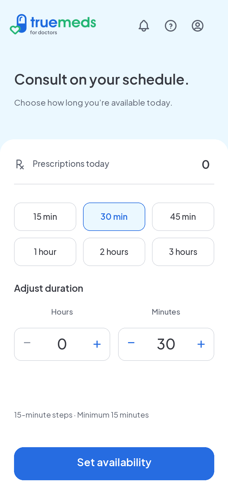
Shared inactive layout: first arrival, expiry and manual end. Existing wheel alternative remains approved for testing; stepper shown here for continuity.
Setting availability

Same setup; busy CTA locks duplicate submission. No success popup: transition to active Home.
Setup error

Same setup; retain selected duration. Inline error and retry.
Available
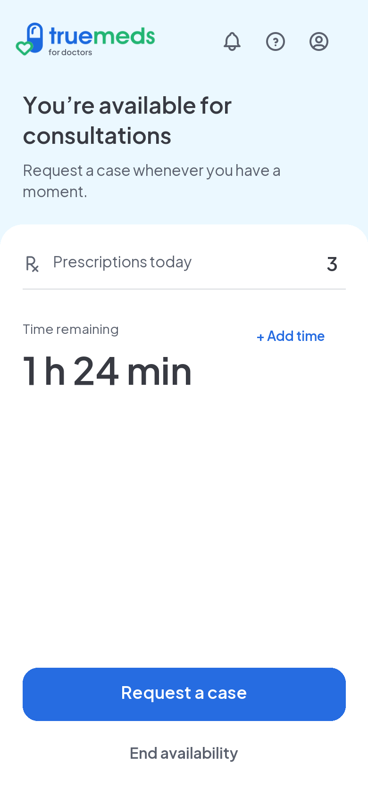
Primary request, quiet End availability, Add time alongside countdown. No third footer CTA.
Requesting a case
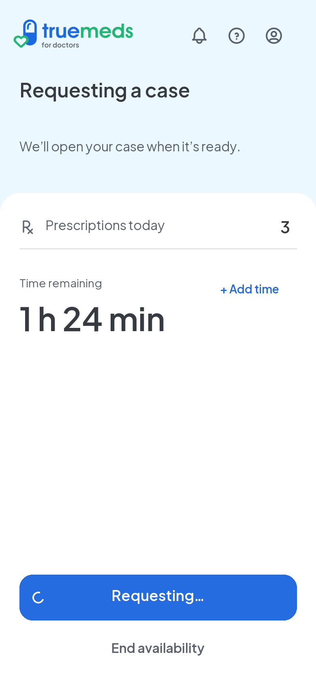
Busy CTA. Unknown response uses this same layout with Checking request… and a short connection notice. Reconcile original request before retry.
No cases available
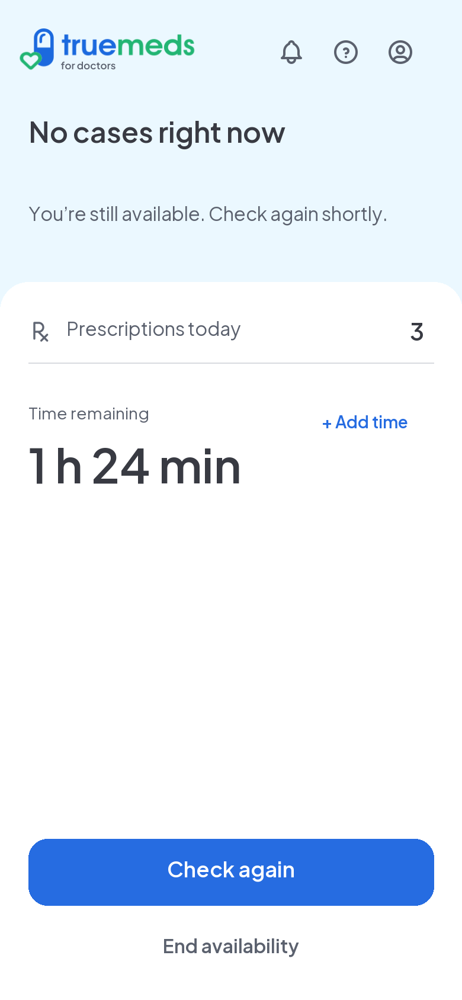
Same active layout. Explicit retry; no automatic polling.
Request error
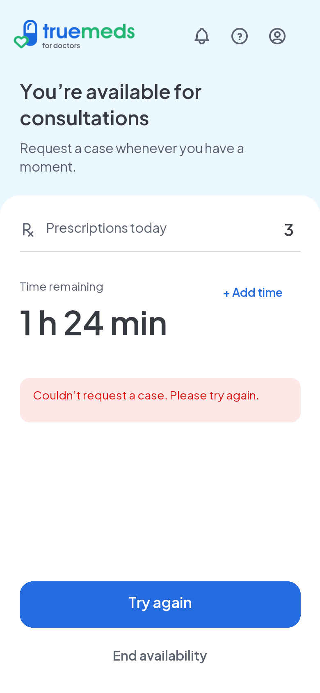
Retry only once server confirms no case assigned. Unknown outcome stays in requesting layout.
Offline
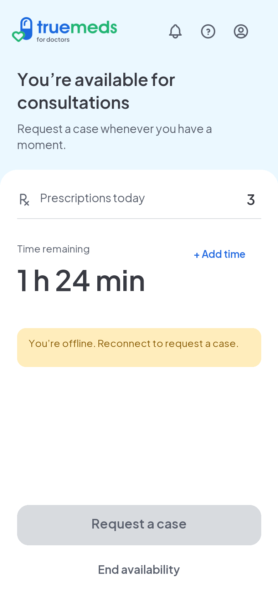
Availability continues. Mutations need connection; retain selections and reconcile when connection returns.
Ending soon
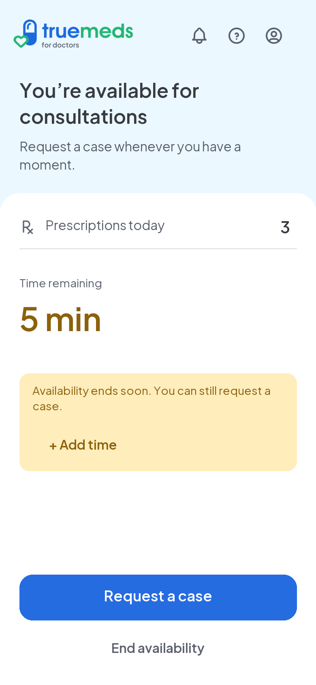
Promote Add time inside amber notice at 5 minutes; suppress duplicate timer link. Requests remain eligible until deadline.
Add availability
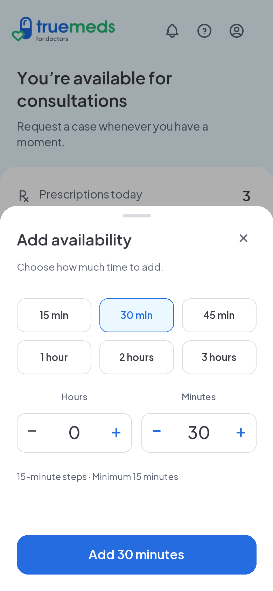
Same picker and presets as initial setup. Expiry while open introduces no new UI or action. Add duration to max(server time, current deadline). Failure preserves selection; retry must be idempotent.
Adding time
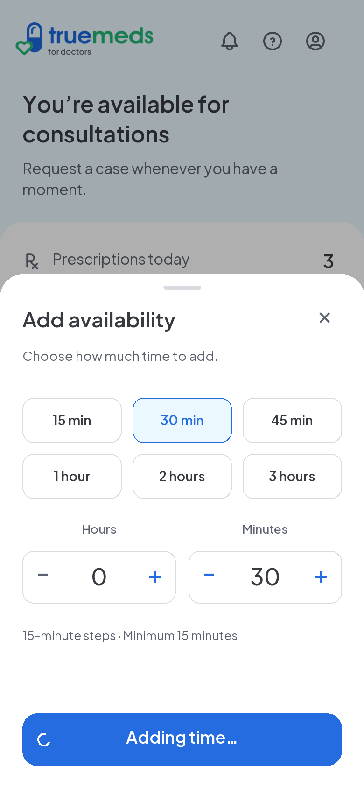
Same picker and presets as initial setup. Expiry while open introduces no new UI or action. Add duration to max(server time, current deadline). Failure preserves selection; retry must be idempotent.
Add time error
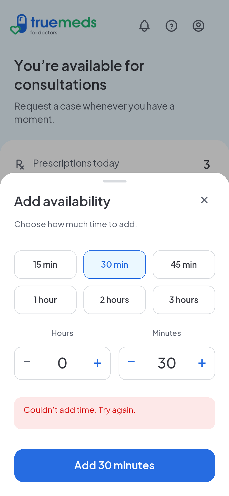
Same picker and presets as initial setup. Expiry while open introduces no new UI or action. Add duration to max(server time, current deadline). Failure preserves selection; retry must be idempotent.
Added — transient toast
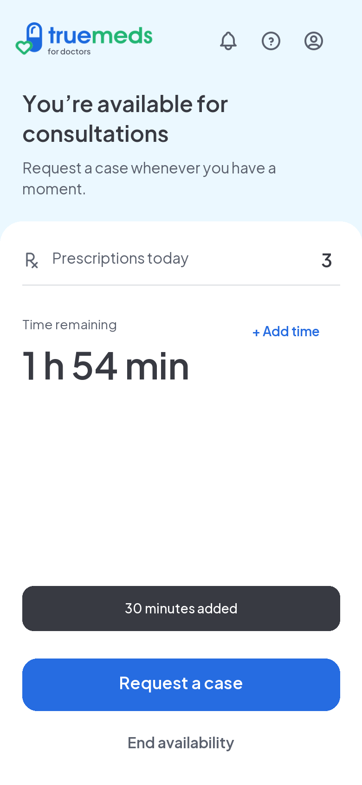
Not a separate screen. Return to current Home, update countdown and show toast about 4 seconds; respect native accessibility duration. Preserve previous Home context, including empty queue.
End during pending request
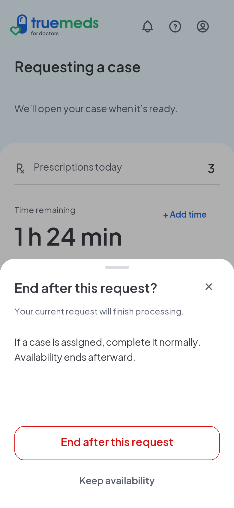
Conditional confirmation only. Idle End availability uses saving feedback then returns to setup with toast. Confirm schedules stop; dismissal changes nothing.
Stop scheduled
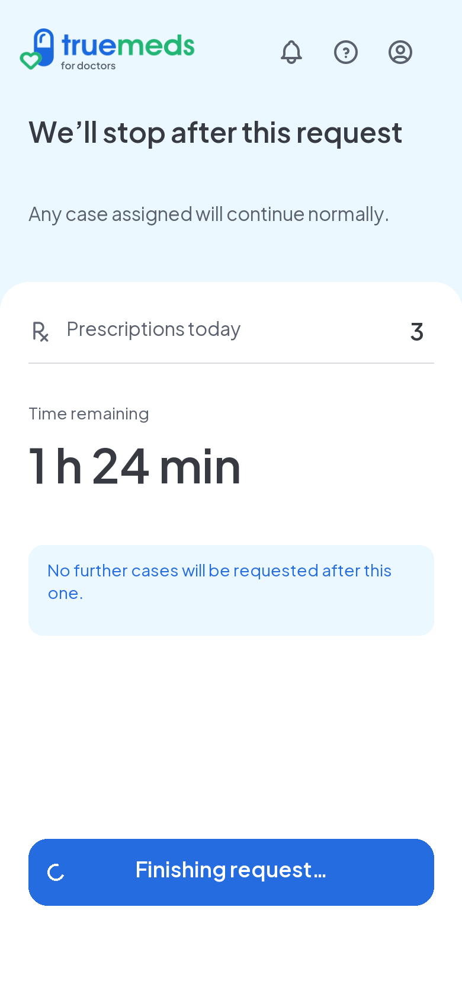
Persistent status, not toast. Request/case resolves then return to setup. No restart until request reconciled.
Window ended with request pending
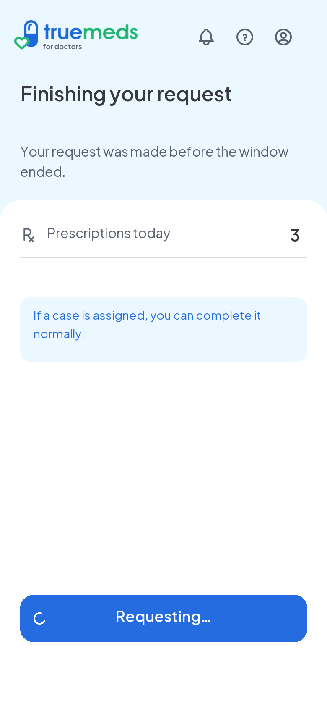
Same pending Home layout. No 0-minute hero or expiry popup. Honor request, then existing case or inactive setup.